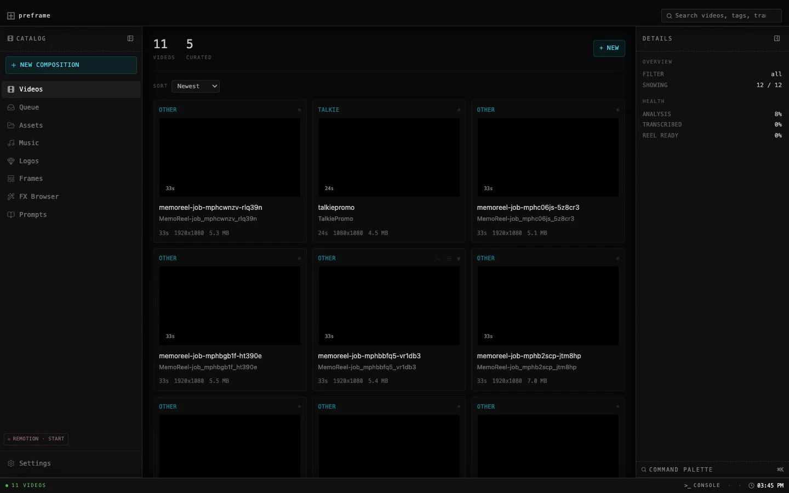

messaging · june 2026
Preframe
I make product videos from screen recordings. Watch a take, mark a frame, leave a note, render again. That's the whole thing.
How it starts
First thing I do is capture it raw — one long screen recording, like a take. I don't cut anything yet. I just grab the whole thing.
Then I drop that capture into Preframe and write what I want — the objective. Drop zone, one prompt field. Hit Create and the tool splits it into scenes, runs vision, pulls transcription, and does a content pass. A montage prompt comes back — beats, order, what to keep.
That's where the loop kicks in.

The loop
after the first cut exists — repeat until it's right
Watch the take. Box what's wrong. Add a note if you need to.
Notes go in. Another render comes out.
Pick the take you like. Done.
Quick tour
- First I capture raw — one long take, the whole screen. No cutting yet.
- Drop the capture, write the objective — Video Instructions. Create kicks off scene split, vision, transcription.
- A prompt suggests a montage. That's where I start actually working it.
- Bad frame? I put a box on it.
- Add a note — something like, more motion here.
- It renders again. I pick a take and export.
Voice
- First person. Plain sentences.
- Showing my setup, not selling a product.
- Chrome stays chrome — don't narrate the sidebar.
- Say less. Cut the thesis lines.
Cut these
- A video is just code
- Your cut, before the cut
- The source is the output
- stage the prompt, review the cut, ship the frame
- the video and source should match
Landing copy
I make product videos from screen recordings. Watch a take, mark a frame, leave a note, render again.
Featured clip
- Talkie promo — finished video for Talkie. Made with this same setup.
Playlist groups
- clips — finished
- other takes — drafts
- fx tries — experiments
Site map
/ landing — player, tour, loop, try locally /concepts/ design drafts (footer link only) README same loop words, architecture stays off-site